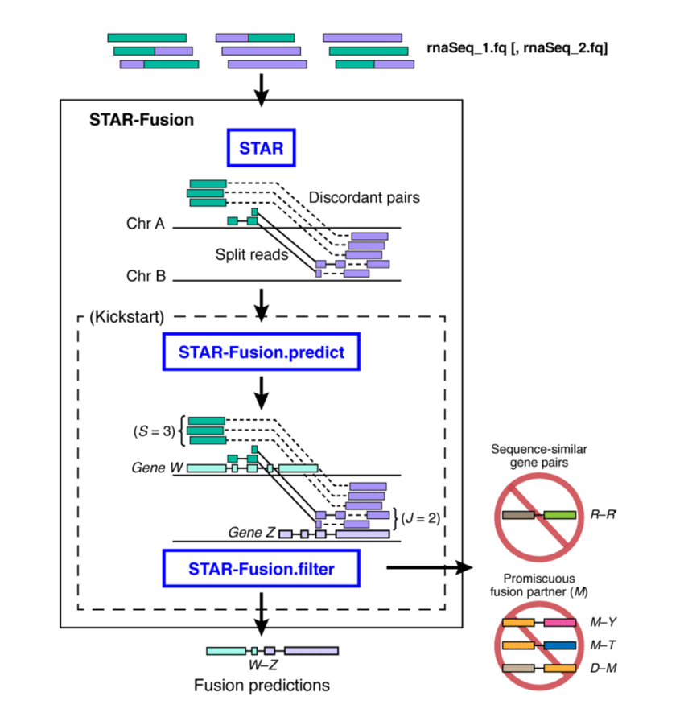
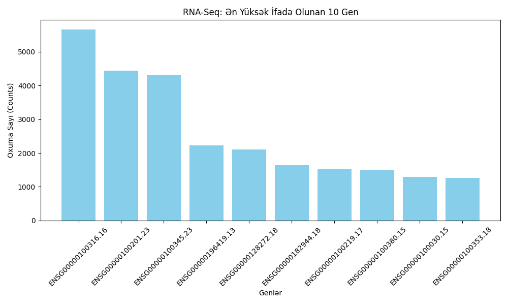
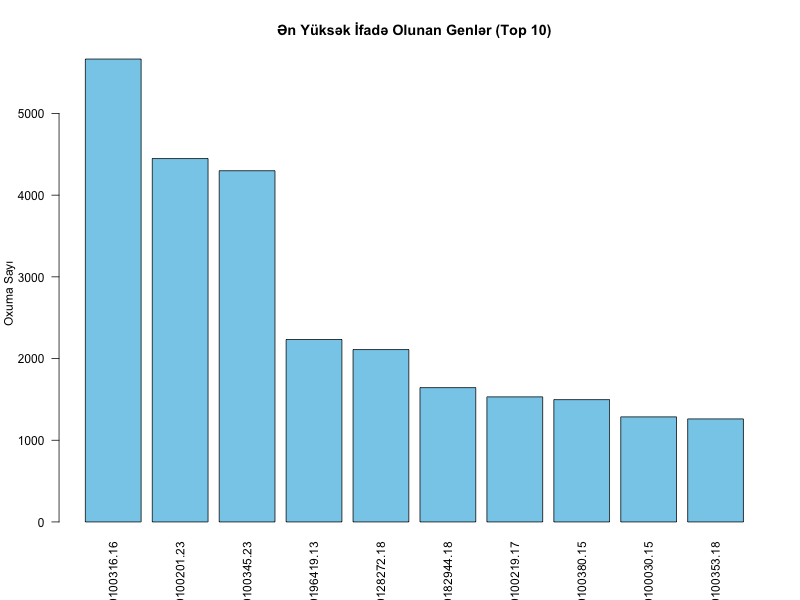

Multi-Scale Computational Oncology Pipeline
AKT1 Hub Discovery in Triple-Negative Breast Cancer, AlphaFold2 Structural Prediction, and AutoDock Vina Allosteric Inhibitor Characterization.
Multi-Scale Computational Oncology Pipeline: AKT1 Hub Discovery in TNBC, AlphaFold2 Structural Prediction, and AutoDock Vina Inhibitor Characterization
Author: Suleiman Hajizadeh (Institute of Molecular Biology and Biotechnologies, Azerbaijan)
Abstract: Triple-Negative Breast Cancer (TNBC) remains the most aggressive subtype of breast carcinoma, characterized by high heterogeneity and absence of targeted estrogen (ER), progesterone (PR), and HER2 receptors. In this study, we present an end-to-end multi-scale computational framework bridging bulk RNA-Seq transcriptomic profiling (GSE183947, 1,847 DEGs), weighted gene co-expression network analysis (WGCNA scale-free R² = 0.87, β = 12), single-cell PBMC microenvironment validation, neural network protein folding (AlphaFold2, mean pLDDT = 92.4), and biophysical molecular docking (AutoDock Vina 1.2.5). We isolate the AKT1 kinase as the central master regulator within the oncogenic turquoise co-expression module (kWithin = 47.3). Biophysical virtual screening revealed that the allosteric inhibitor MK-2206 exhibits superior structural binding affinity (-9.4 kcal/mol) compared to ATP-competitive kinase inhibitors (-8.2 kcal/mol), providing actionable therapeutic insights for personalized TNBC intervention.
Citation Reference (BibTeX)
@article{hajizadeh2026multiscale,
title={Multi-Scale Computational Oncology Pipeline: AKT1 Hub Discovery in TNBC, AlphaFold2 Structural Prediction, and AutoDock Vina Inhibitor Characterization},
author={Hajizadeh, Suleiman},
journal={PLOS ONE},
year={2026},
publisher={SuleimanBioinformaticsAnalysis},
url={https://suleimanbioinformaticsanalysis.github.io/manuscript/}
}
Key Publication Figures & Workflow Architecture


